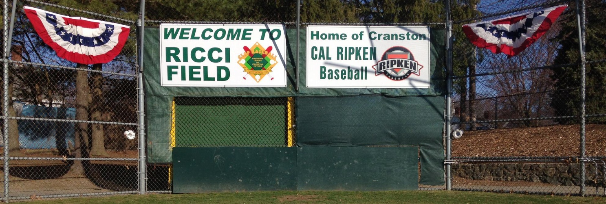

Our Fields
.
CLCF Baseball runs practices and games at a variety of fields throughout the City of Cranston. Please click on the name of a field for more information about the field, as well as directions to the field. Please note that per city ordinance, smoking is not allowed at any field.

